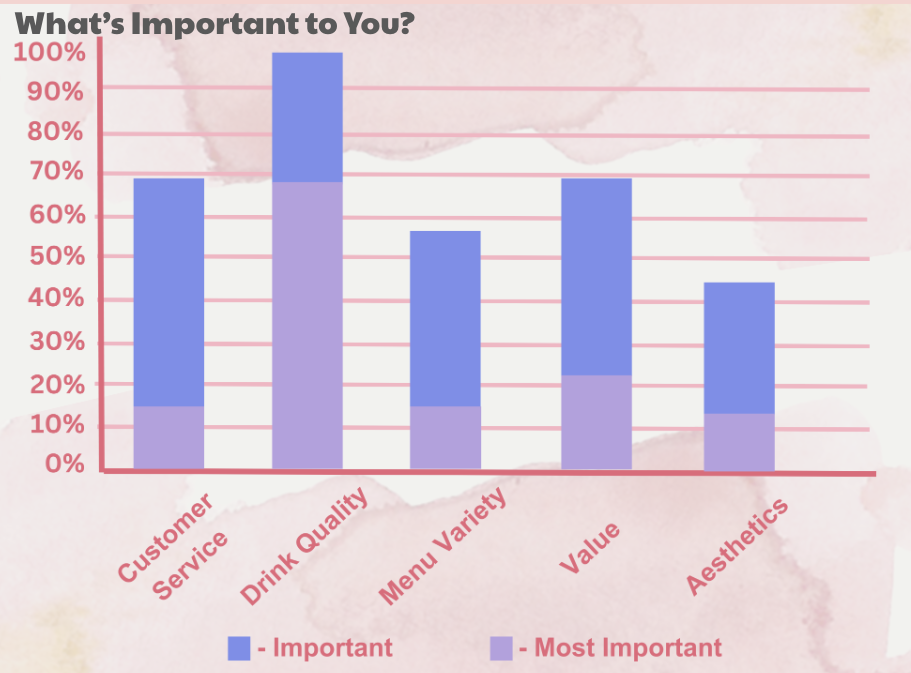
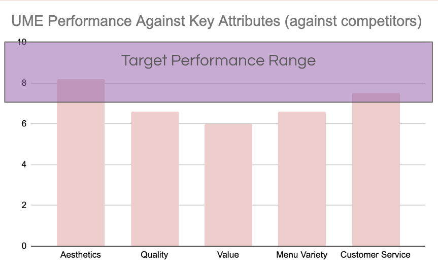
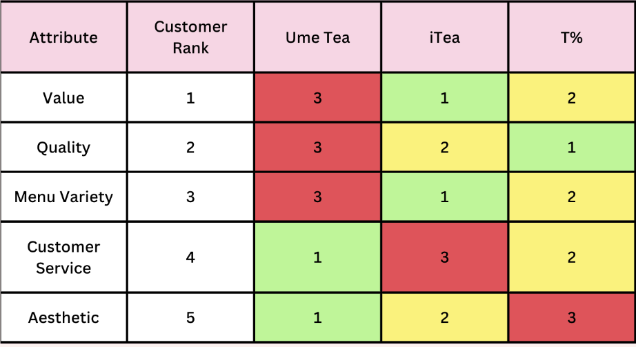

Gathering Data
We conducted a focus group with 12 participants to explore why customers choose to buy, or not buy, from the brand, and to uncover what aspects of the experience are working well or need improvement.
In addition, a survey with 26 participants was distributed to identify the target audience, quantify key purchase drivers, and assess brand performance relative to competitors, helping to highlight any problem areas.
Customers segmentation
To better understand our audience, we segmented UMe Tea’s consumers based on frequency of visitation and purchase.
Segmentation 1
Always goes to UMe
Segmentation 2
Often goes to UMe
Segmentation 3
Sometimes goes to UME
Segmentation 4
Rarely goes to UMe
After careful analysis, we chose to focus on Segment 3, which offered the most actionable insights. Shifting these customers to Segment 2 promised greater impact than moving Segment 4 to 3, as increasing visit frequency aligned more closely with our business goals.
User Persona
Diving Further
Why the target audience within the segmentation buys based on Important vs. Most Important values gathered by customer wants and needs.
Customer Service
Wait time and ease of order
Drink Quality
Taste of teas, smoothies, toppings, etc.
Menu Variety
Options of flavors provided
Value
Quality of product compared to price
Aesthetics
Comfortability and Cleanliness of the environment

Why You May Win or Lose Segment 3 as a Customer
We asked participants to rate how satisfied they were with UMe Tea’s performance in the area of importance, using a likert scale. Based on competitive product and competitive gap analysis.

The analysis reveals that Aesthetics is UMe Tea’s standout strength, achieving performance within the target performance range and aligning closely with customer expectations. In contrast, Quality, Value, Menu Variety, and Customer Service fall below the benchmark, indicating a gap between what customers expect and what they experience. While UMe’s visual identity effectively attracts its target audience, the findings show that critical areas like product excellence, meaningful value, and service consistency present key opportunities for enhancement. Addressing these deficits could drive higher satisfaction, stronger loyalty, and a more competitive market position.
Competitive Product Analysis
This comparison chart evaluates how three competitors (UMe Tea, iTea, and T%) perform across five attributes ranked by customer importance. A rank of 1 indicates best performance, while 3 reflects the weakest.
Customer priorities center on Value, Quality, and Menu Variety.
iTea
Aligns best with these top-ranked attributes, indicating strong market alignment.
UMe Tea
Performs well in Customer Service and Aesthetic, though these are lower-priority areas.
T%
Shows balanced performance but could improve its visual appeal. UMe Tea’s gap in high-priority categories suggests an opportunity for strategic realignment.

Gap Analysis
Customer Satisfaction vs. Importance Gaps
We analyzed customer satisfaction ratings across three tea brands, UMe Tea, iTea, and T%, alongside the gap between perceived importance and actual satisfaction.
Our gap analysis revealed that UMe Tea had the largest satisfaction gap (-2.1), signaling a major mismatch between customer expectations and delivery. Competitors like T% and iTea showed greater consistency, suggesting stronger alignment with customer needs.
UMe's SWOT Analysis
Strengths
The brand’s strengths include a visually appealing store design that resonates with younger audiences, engaging plushie promotions that drive foot traffic, and a streamlined ordering process that ensures convenience and a smooth user experience.
Weaknesses
The brand struggles with inconsistent drink quality, a perceived lack of value compared to competitors, and a limited menu, all of which hinder customer satisfaction and repeat visits.
Opportunities
The brand can grow by leveraging TikTok and Instagram to reach younger audiences, using its unique “surprise” element to stand out, and capitalizing on minimal competition in North Davis to capture market share.
Threats
The brand faces strong competition from established shops like iTea, Teaspoon, and T%, while rising consumer expectations around quality and customization demand constant improvement to stay competitive.